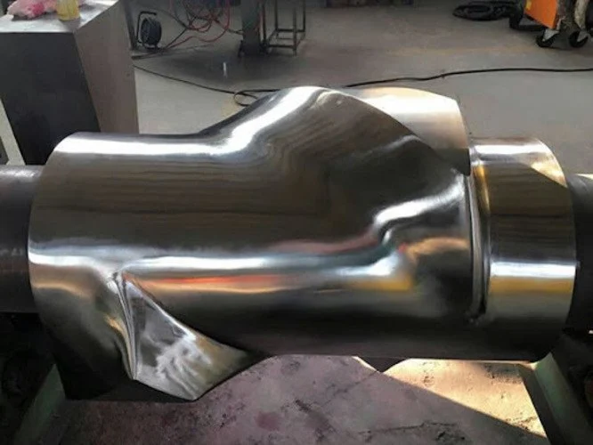
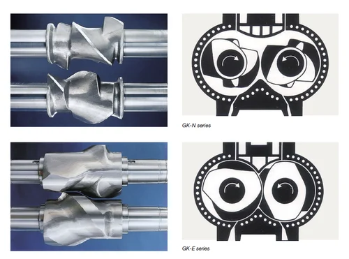
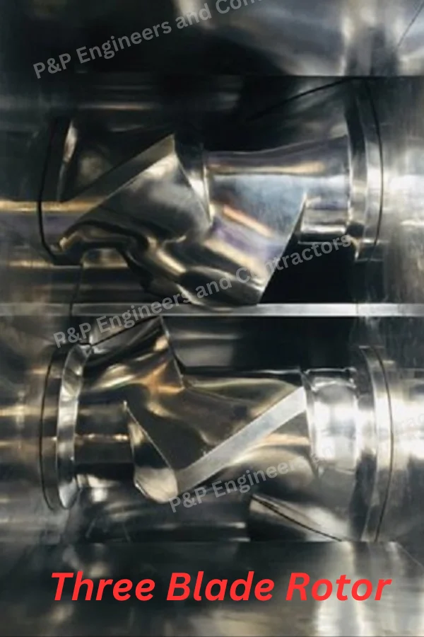
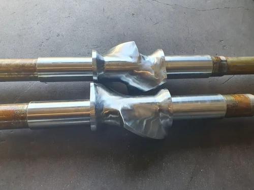

High-quality rotors made from alloy steel with hard chrome plating, available in tangential and intermeshing types for various kneader capacities.




Rotors rotate tangentially without meshing. Generates lower shear; ideal for heat-sensitive or soft compounds.
Examples: Standard tangential, Variable helix tangential.
Rotors interlock, creating high shear. Suitable for high-viscosity materials and tough fillers.
Examples: Spiral intermessing, Helical intermessing.
Polished to a mirror finish (Ra < 0.4 �m) to prevent sticking and improve cleaning.
Used for natural rubber, elastomers, or compounds with minimal fillers.
Used for high-carbon black compounds, silica-rich mixes, or heavy-duty industrial rubber.
Made from AISI 4140, 42CrMo alloy steel for high tensile strength and wear resistance.
Increases wear resistance and prevents sticking of rubber compounds.
Enhances surface hardness to 60-70 HRC for extended service life.
Both rotor types available for different mixing requirements.
Internal channels for temperature control from 20°C to 200°C.
Polished to Ra < 0.4 �m to prevent sticking and improve cleaning.
Tangential rotors for natural rubber and elastomers with minimal fillers
Intermeshing rotors for carbon-black compounds and silica-rich mixes
For tough industrial rubber applications requiring high shear
Get detailed specifications, pricing, and technical consultation for your specific rotor requirements.
Get Quote